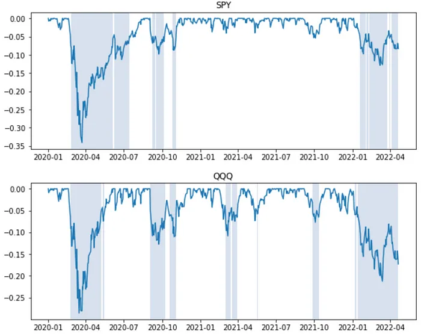

A drawdown measures the distance (in %) of the portfolio value from its peak, reflecting its downside risk. If a portfolio had previously reached a peak of $100 and subsequently dropped to $90, then the portfolio experienced a 10% drawdown.
We examine the drawdown risk sector by sector through a collection of Sector ETFs over the period 1/1/2020–4/22/2022. As we will see, drawdown risk may vary greatly in terms of magnitude and duration across sectors.
To start, we look at the drawdown charts for the S&P500 ETF (SPY) and QQQ ETF. It’s visible that QQQ has experienced more frequent drawdowns (of 5% or more), and it’s currently mired in a deep drawdown.

Next, we compare at the Financial Sector ETF (XLF) and Tech Sector ETF (XLK). Naturally, XLK’s drawdown chart looks similar to QQQ’s (above).
A summary of work first published on timleungresearch.medium.com.